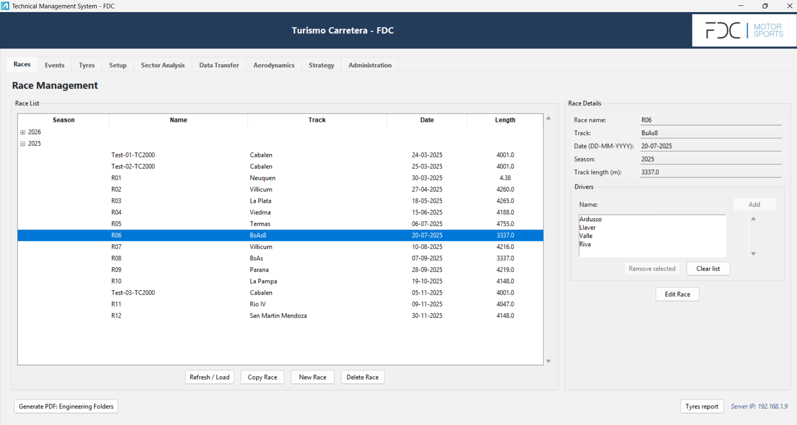
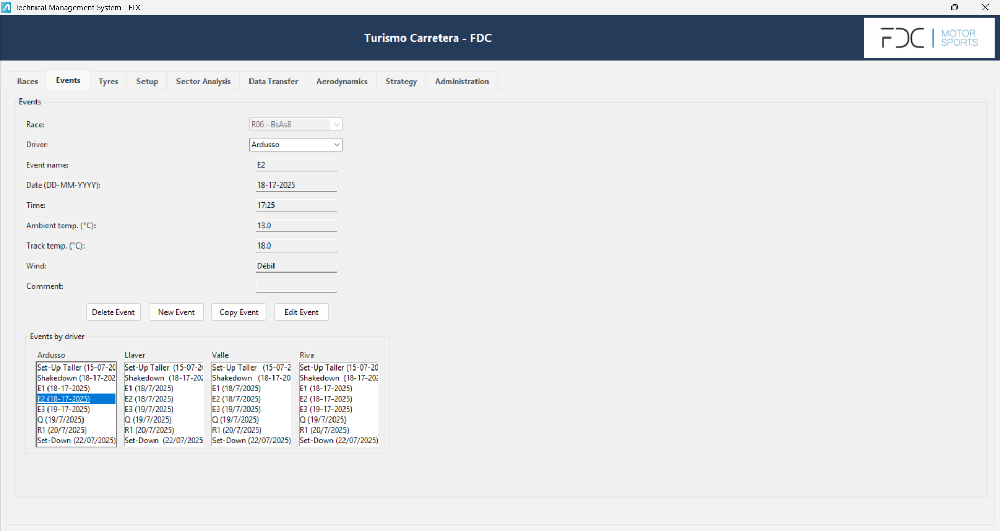
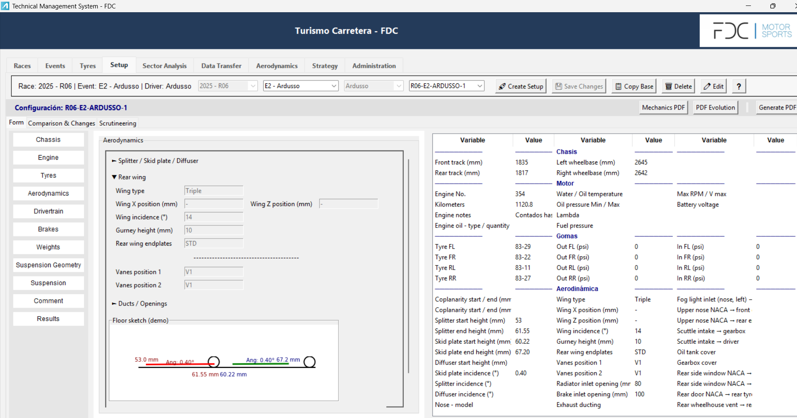
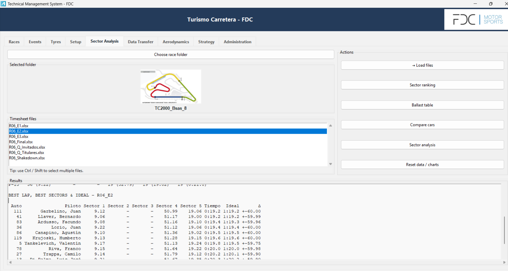
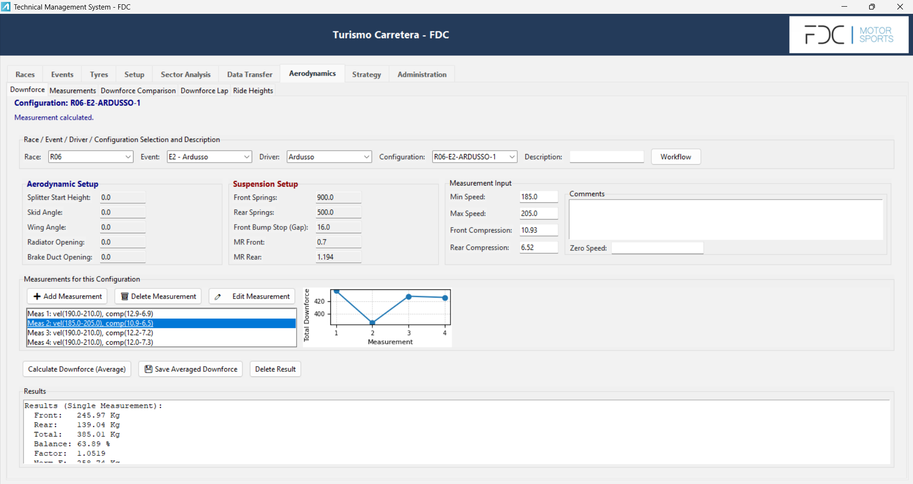
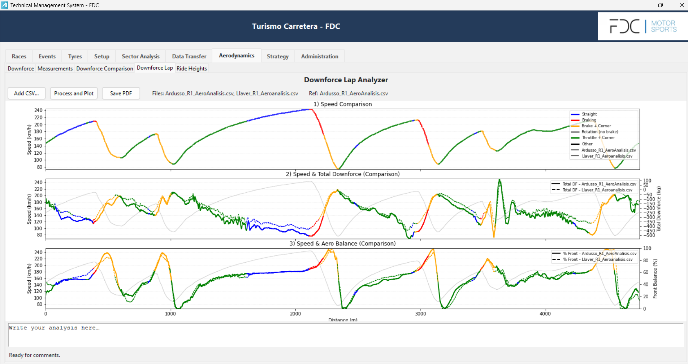

Motorsport Technical Management Software
Internal engineering software developed to support technical data management, workflow organization, and future AI-assisted analysis in motorsport applications.
Overview
This project consists of a motorsport-oriented technical software platform developed to support the organization, storage, and analysis of engineering data in competition environments. The application was designed to centralize information related to vehicle set-up, tyre usage, aerodynamic configuration, track sessions, and circuit studies into a structured and accessible workflow.
Current Development and Future Direction
The platform remains under active development as an internal engineering tool, with current efforts focused on improving data organization, expanding analysis modules, and making technical workflows more efficient in competition environments. One of the most important next steps is the integration of artificial intelligence within the application.
The goal of this future development is to provide intelligent engineering support for tasks such as set-up optimization, comparison of previous configurations, identification of recurring trends across sessions, and faster interpretation of available technical data. In this context, AI is intended to become a key layer of assistance inside the software, helping engineers work more effectively while keeping final decision-making grounded in engineering criteria and trackside experience.
The Challenge
In motorsport engineering, technical information is often scattered across spreadsheets, notes, setup sheets, and session records, making it difficult to maintain consistency, compare configurations, and quickly retrieve relevant data. The objective of this project was to build a dedicated software tool capable of improving traceability, workflow efficiency, and engineering access to critical competition data.
My Role and Contribution
I led the development of the software from the ground up, using both my own trackside experience and continuous feedback from the race engineers responsible for the cars. This collaborative process allowed the tool to be shaped around real competition engineering needs, from database structure and interface design to the definition of the most relevant technical workflows and analysis modules.
Interface Highlights
The following views show selected parts of the software in real operational use, based on a working database containing races, events, configurations, and engineering records from the 2025 season.






Language and Operational Context
Although the interface shown here has been adapted to English for presentation purposes, part of the internal database structure and some stored engineering records remain in Spanish. This reflects the real operating environment of the Argentine motorsport team for which the software was developed and used.
Full source code and complete software access are not publicly available due to internal development and team-oriented use. This page presents selected features and representative views of the tool.